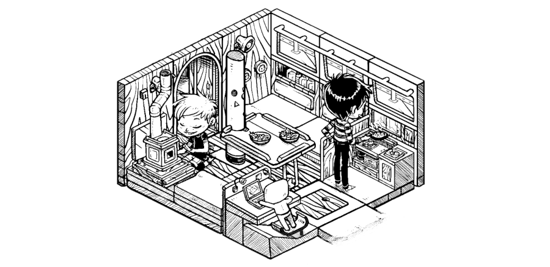
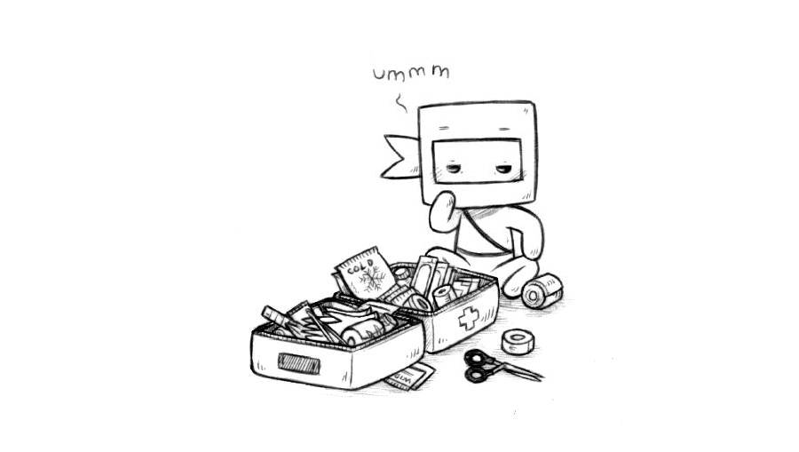

home
log
Receive monthly updates via our RSS feed, or by signing up to our monthly newsletter.
2025
August 2025
- Wiktopher, updated songs.
- 100r.co, updated cast iron cookware(seasoning oil suggestions).
We released Devine's Permacomputing 101 talk for Critical Signals 2025, expect a written version soon.
July 2025

- Catjam 2025, finished a small game called Polycat!
- 100r.co, added vancouver island west coast, ucluelet, port san juan, juan de fuca strait and cadboro bay.
- Theme Editor, made a nicer theme editor for our tools ecosystem.
- Punk Rabbits, started a drawing series of rabbit characters with the goal of making one hundred.
This month we sailed into the Juan de Fuca Strait, escorted by pods of orcas and a lone young humpback whale. The last time we had been here was in July 2020, on our way back from Japan. After weathering gale force winds at anchor in Becher Bay, we stopped in Port San Juan. The beaches there are covered in old growth driftwood, carried there by winter storms. Some trees are so large and have been there so long that people have installed swings on them. The way to Barkley Sound was bleak, we spent 10 hours of it in a fog bank, only to emerge near Cape Beale to a bright sun over jade-colored waters. We pulled into Ucluelet the next day, just in time to meet up with our friend Avi to view the building site for their upcoming boatyard project.
We spent a few days anchored in Barkley Sound, in an anchorage with the biggest population of hummingbirds we'd ever seen. The hummingbird visits were constant, with 3-4 buzzing around us at all times. During our stay there we completed our game entry for Catjam named Polycat. The game is very hard, but also very short. Watch a video of Devine playing the game.
In the second half of July, Pino sailed back to the Southern Gulf islands and stayed anchored alongside a friend, messing with their laser engraver, hiking, picking blackberries, and working on projects. Instead of hummingbirds, in Fulford, we had kingfishers, they really liked sitting on the wind vane's arrow on top of the mast. See this amazing drone footage shot by our friends aboard MV Poem.
Devine has been invited to talk about permacomputing at Critical Signals on August 12th. They will try to introduce some of the ideas that they find most interesting via practical examples. Save the date!
Book Club: This month we are reading Ancillary Justice by Ann Leckie.
June 2025
- 100r.co, updated costs, hauling out, united states and teapot gelcoat. Added san juan islands.
- Rabbit Waves, added all content links to the main page, released a new page called Boatswain's Call.
- Orca, embedded runtime in the reference guide.
- Left, made lots of little improvements and optimizations!
- Solresol, learnt some profanities in a musical conlang?
For a few days, Pino became a land creature, living on stilts, while we scrubbed and re-painted the lower part of the hull. Our propeller had a bit of a wobble, which we hope is now corrected. We also battled with the old wheel quadrant and were finally able to remove it, at least a part of it. Boaters have frequently helped us while we were in boatyards, and we are finally able to pay it forward. We offered both advice to those who asked and lent tools to folks that needed them. It felt nice. Teapot's new bottom has seen water for the first time, the new gelcoat will allow us to take it around into bays for many more years to come.
We spent many June days working on both Turnip Complete(Uxn book) and the enhanced version of the Victoria to Sitka Logbook, with frequent breaks to enjoy the beautiful places we found ourselves in.
The beginning of our sailing season has been very blustery, allowing for some good sailing, but also often forcing us to wait at anchor for clement weather. Later, we sailed through the San Juan Islands to meet up with some Merveillans on Blakely Island. We are very grateful to be part of a community of such kind, curious, and generous people. The image that was drawn for this month's update represents cooperation between members of Merveilles.
Book Club: This month we are reading Ill Met By Moonlight by Sarah A. Hoyt, Silmarillion by J.R.R Tolkien and Girl's Last Tour by Tsukumizu.
May 2025
- 100r.co, updated water and Oquonie.
- Modal, the interpreter was ported to Uxn!
- Uxntal, the documentation has been completely redone!
- Hakum, added page 7 and page 8 of Sabotage Study.
Oquonie was released on the Playdate Catalog this month! We'd like to thank everyone who sent us photos of their progress in the game, it has been nice to follow along. The game is kind of our first official release on a modern handheld platform, and we're happy to see that Uxn roms run well on it! It might be one of the first original Playdate games implemented that way?
In other news, Devine started working on a book, the working title is "Turnip Complete". The goal is to write a complete and stand-alone implementation guide for the Uxn virtual machine and devices, along with some example programs and thoughts about playful computery things. We might have something to show for it come autumn, maybe.
We've left Victoria for the summer, and are falling back into the groove of waking up at dusk to catch the tide. We have a quick haul out lined up, and afterward we'll be sailing around the Gulf Islands until the fall. We have lots of projects to finish up these next couple of months and can't wait to share them with you.
We share photos of life aboard throughout the month on our little photo site, if you're curious to see what the daily life aboard Pino is like.
Book Club: This month we are reading Artemis by Andy Weir, Gardening Without Work: For the Aging, the Busy and the Indolent by Ruth Stout and A History of Thinking on Paper by Roland Allen.
April 2025
- 100r.co, updated water, ditch bag, woodstove installation, and added new photos and information on first aid kit.
- Rabbit Waves, updated Triangular Bandages with animated gifs, and First-Aid kit with new med suggestions (also appended a .txt list of meds and their intended use).
- Hakum, began a new comic sequence named Sabotage Study(not yet completed).
- Orca, modified the behavior of the lowercase-j operator to allow for jumpers to grow.
- Solresol, improved the documentation.
- Uxntal, improved the documentation.
The weather is getting warmer, which is perfect for airing out Pino's lockers, and drying off moldy clothes and tools. Anything stored in the v-berth lockers, below the waterline, suffer from extreme wetness. It is a very, very annoying fact of boat life, but there is really no way to bring good air flow in those spaces. We scrubbed the lockers clean, parted with items we no longer needed, and sent two laptops to the recycler.
In last month's update, we mentioned Flickjam, a game jam based on Increpare's Flickgame. We received a total of 27 entries! They're really fun, and all playable in the browser. Devine's jam entry is about a very adorable rabbit learning to play the word "rabbit" on a xylophone in Solresol.
Devine spent some time off the computer, skating and folding paper. The paper computer pages have been updated to cover some new ways in which computer emulators can be operated on paper. While on that subject, we highly recommend Tadashi Tokieda's excellent talk named A world from a sheet of paper.
Another item on Devine's list was to gradually phase out Uxnasm.c in favor of the self-hosted assembler. We're not 100% pleased yet, but it is getting closer to retirement.
Starting on May 20th 2025(1000 PST/PDT) the Playdate Catalogue will include Oquonie. The game is also available on our itch.io store.
The video for Devine's November 2024 talk A Shining Place Built Upon The Sand is now on YouTube.
Book Club: This month we are reading Banvard's Folly by Paul Collins, Einstein's Dreams by Alan Lightman, and we are still making progress on the The Goldfinch by Donna Tartt.
March 2025
- 100r.co, added a new page called ipad media station. Updated the Victoria to Sitka logbook with the 2 final weeks: Week 14 and Week 15.
- rabbit waves, added 2 new pages: First-Aid Kit and Triangular Bandages, and updated Emergency Bag with new illustrations.
- M291, added hiragana & katakana support.
- Turye, improved the design.
In the above illustration, little Ninj is going through a first-aid kit, looking through our supplies to see what needs to be topped off and what is out-of-date. Rek drew a list of suggestions on what to include in both a first-aid and a medical kit for the Rabbit Waves project, we plan to add more items soon(thanks to everyone on Mastodon who suggested additions! It'll be in the April update).
We will spend the first few days of April participating in Flickjam, making small games in the style of Flickgame, a tool originally made by Increpare, in which the world is navigated by clicking on pixels of different colors to head in different directions. Devine ported Flickgame to Varvara, and wrote a compiler for flick games to uxn roms.
This past month, Rek finished transcribing the entire 15 weeks of the Victoria to Sitka logbook! We have plans to turn it into a book, in the style of Busy Doing Nothing, with tons of extra content and illustrations.
March was a very good month for silly calendar doodles. Our paper calendar is always in view, it documents important events like releases, appointments, as well as food, memes, and other noteworthy things that happened on each day.
Book Club: This month we are still reading The Goldfinch by Donna Tartt, it's a long book!
February 2025
- 100r.co, added Dinghy gelcoat, Week 10, Week 11, and Week 12 of the Victoria to Sitka logbook. Updated solar with new pictures and corrected information (this page used to be called solar tips).
- Nebu, released a spreadsheet editor.
- Grimgrains, added a new recipe: Stovetop zaatar pizza.
- Store, added maritime flag stickers for sale.
- Rabbit Waves, added a new page: Emergency Bag. Updated Morse Code with Flags page with animations, released a printable zine(see how to fold a zine).
On February 14th, we celebrated our 9th year living aboard our beloved Pino. Read a short text by Devine, which expands on what it means to truly be a generalist.
Despite the weather being less-than-ideal, we were able to install our replacement solar panels, and revisit our notes on solar installations.
Devine completed Nebu, a spritesheet editor as well as a desktop calendar, alongside many other little desktop utilities. Nebu is just over 8.3 kB, a bit less than a blank excel file.
In times of increasing climate and political instability, it is a good time to get together with your community and make plans for emergencies. Consider reading Tokyo Bosai about disaster preparedness, this elaborate document deals with disasters that occur specifically in Japan, but many of the recommendations are useful regardless. We released a new page on rabbit waves with suggestions on what to pack in an Emergency Bag. Remember, every emergency bag is different, and what is essential varies per person.
We also put together a print-it-yourself zine, which combines useful information about Morse Code and Signal Flags. If you have printed the zine and don't know how to fold it, see Rek's illustrated instructions. Speaking of signal flags, we printed stickers of Rek's ICS flag drawings.
The nice weather finally arrived this week and we were able to redo Teapot's gelcoat. This was our first time working with gelcoat, our friends Rik & Kay, who lent us their workspace, were very patient and generous teachers. We will continue the project later when the gelcoat has cured.
Book Club: This month we are reading The Goldfinch by Donna Tartt.
January 2025

- 100r.co, added a new page: tote. Added Week 8 and Week 9 of the Victoria to Sitka logbook.
- Tote, released the project on itch.io.
- Grimgrains, added a new recipe: chocolate turtles.
- Left, added an option to collapse the nav bar on the left.
- Orca, added community links.
Devine spent time improving the html5 uxn emulator, and thanks to their hard work it is now possible to play Niju, Donsol, and Oquonie directly in the browser on itch.io, the same goes for projects like Noodle and Tote.
It's been a long time coming, but Oquonie is now playable on Playdate. Rek spent the last week converting the 2-bit assets for Oquonie to 1-bit, because some of the characters and tiles were too difficult to read, now all of the assets work perfectly on monochromatic screens. As an amazing plus, Devine got the music and sounds working perfectly, just like in the original iOS version.
From January 19-25th, we both participated in Goblin Week, an event in which you make goblins every day for a week(whatever that means to you). See the goblin series made by Rek(viewable here in higher rez also) and the one made by Devine(Mastodon).
Pino has earned two new replacement solar panels this month! We have not installed them yet, it is still too cold outside in Victoria (we are expecting snow this week).
We share photos often in our monthly updates, and so Devine spent time building our very own custom photo feed named Days. It is possible to follow the feed with RSS.
Book Club: This month we are reading How do You Live? by Genzaburo Yoshino and Middlemarch by George Eliot.
Archives
See log archives for 2024, 2023, 2022, 2021, 2020, 2019, and 2018.